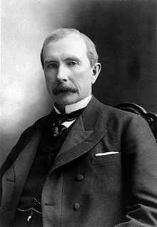

John Davison Rockefeller Sr. (July 8, 1839 – May 23, 1937) was an American
oil industry business magnate and philanthropist, who is considered to be the
wealthiest American of all time by virtually every source, and—largely—the
richest person in modern history.
Born in upstate New York, he was shaped by his con man father and religious
mother. His family moved several times before eventually settling in Cleveland,
Ohio. He had various siblings, including William, who would enter the oil
business with him.
Rockefeller became an assistant bookkeeper at the age of 16,
and went into a business partnership with Maurice B. Clark and his brothers at
20. He bought them out and went on founding Rockefeller & Andrews with his
brother William and another shareholder — chemist Samuel Andrews. Instead of
drilling for oil, he concentrated on refining. In 1867, Henry Flagler entered
the partnership. The Rockefeller, Andrews & Flagler company prospered,
incorporating local refineries, until the foundation of Standard Oil.
Rockefeller founded Standard Oil Company, Inc. in 1870 as an Ohio partnership
with his brother William along with Henry Flagler, Jabez A. Bostwick, Samuel
Andrews, and a silent partner, Stephen V. Harkness. He ran it until officially
retiring in 1897.
As kerosene and gasoline grew in importance, Rockefeller's
wealth soared and he became the richest person in the country, controlling 90%
of all oil in the United States at his peak.
Oil was used throughout the country as a light source until the introduction of
electricity and as a fuel after the invention of automobile. Rockefeller had
enormous influence on the railroad industry, which transported his oil around
the country.
Standard Oil dominated the oil industry and was the first great
business trust in the United States. Rockefeller revolutionized the petroleum
industry, and along with other key contemporary industrialists such as steel
magnate Andrew Carnegie, defined the structure of modern philanthropy.
The U.S. Supreme Court ruled in 1911 that Standard Oil must be dismantled
because it violated federal anti-trust laws; it was broken up into 34 separate
entities that included companies that would become ExxonMobil, Chevron, and
others. Some of them are still among companies with the largest revenue.
The
individual pieces of the company were worth more than the whole, and as shares
of the individual companies doubled and tripled in value in their early years,
Rockefeller became the country’s first billionaire with a fortune worth nearly 2
percent of the national economy.His peak net worth was estimated at $336 billion
(in 2007 USD; inflation-adjusted) in 1913, two years after the dissolution of
Standard Oil, at 74 years of age.
Rockefeller spent the last 40 years of his life in retirement at his estate,
"Kykuit", in Westchester County, New York. His fortune was mainly used to create
the modern systematic approach of targeted philanthropy.
He was able to do this
through the creation of foundations that had a major effect on medicine,
education and scientific research. His foundations pioneered the development of
medical research and were instrumental in the eradication of hookworm and yellow
fever.
Rockefeller was also the founder of both the University of Chicago and
Rockefeller University and funded the establishment of Central Philippine
University in the Philippines.
He was a devout and devoted Northern Baptist, and
supported many church-based institutions. Rockefeller adhered to total
abstinence from alcohol and tobacco throughout his life.
He was a faithful congregant of the Erie Street Baptist Mission Church, where he
taught Sunday school, and served as a trustee, clerk, and occasional janitor.
Religion was a guiding force throughout his life, and Rockefeller believed it to
be the source of his success. Rockefeller was also considered a supporter of
capitalism based on a perspective of social Darwinism, and was quoted often as
saying "The growth of a large business is merely a survival of the fittest